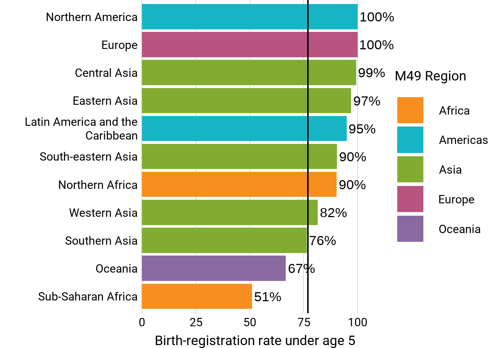
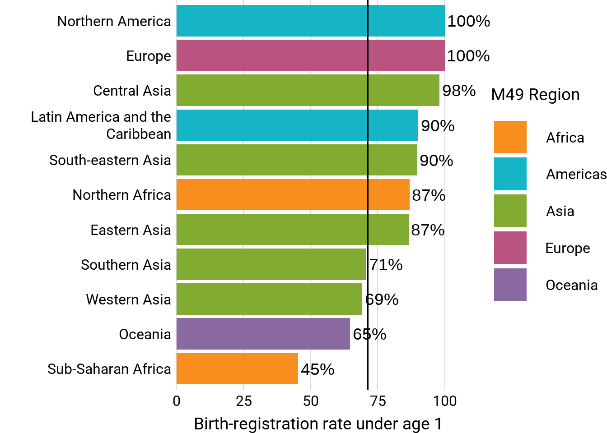
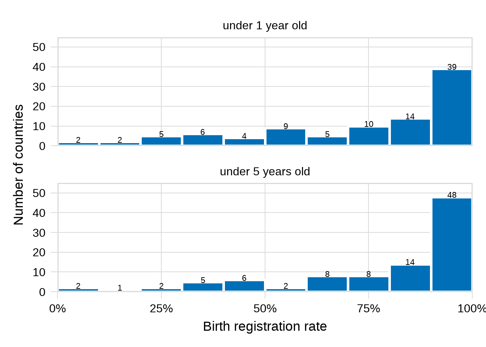
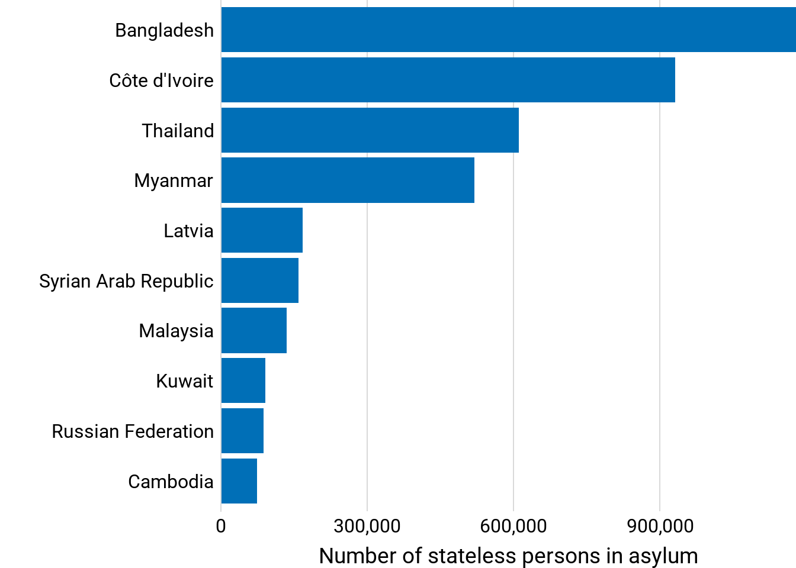

Show the code
eda(getHRDx("SG_REG_BRTH"))There are 13 regions in the dataset.
Globally-aggregated data is available.
There are 184 countries in the dataset.
The most recent data is from 2025 with 13 observations.Indicators:
proportion of registered births (SG_REG_BRTH)
number of stateless people (HR_STLS_DEMOG)
eda(getHRDx("SG_REG_BRTH"))There are 13 regions in the dataset.
Globally-aggregated data is available.
There are 184 countries in the dataset.
The most recent data is from 2025 with 13 observations.Data note from custodian: 1 While trend data are available, changes in the indicator definitions, age groups covered, as well as the measures and questions used to collect the information have changed over time. These factors affect the comparability of available data sources and require careful review and assessment in order to accurately and reliably draw conclusions about trends over time for most countries. For this reason, trend data for this indicator are not included in UNICEF global databases. Based on 173 countries with a population coverage 98 per cent of the global population aged 0-4 years. These estimates are based on countries with an available data source within the reference period of 2014 to 2023 and apply a methodology that is detailed in the 2024 UNICEF global report, The Right Start in Life: Global levels and trends in birth registration, 2024 update.
cat("In 2023, roughly", scales::percent((getHRDx("SG_REG_BRTH") |> filter(ageCode == "Y0T4", regionId == 1) |> pull(value)), scale = 1)[1], "of children under age 5 globally had births registered")In 2023, roughly 77% of children under age 5 globally had births registeredcat("In 2023, roughly", scales::percent((getHRDx("SG_REG_BRTH") |> filter(ageCode == "Y0", regionId == 1) |> pull(value)), scale = 1)[1], "of children under age 1 globally had births registered")In 2023, roughly 71% of children under age 1 globally had births registeredRoughly 3 of 4 children globally have their births registered. UNICEF calls this 8 of 10 so maybe best to frame it that instead?
getHRDx("SG_REG_BRTH") |>
filter(ageCode == "Y0T4", !is.na(regionId)) |>
left_join(regions) |>
filter(level > 0, parentId != 9) |> left_join(regions |> select(regionId, name) |> rename(parent_region = name) |> mutate(regionId = as.integer(regionId)), by = c("parentId" = "regionId")) |>
mutate(group = case_when(level == 1 ~ name,
.default = parent_region)) |>
ggplot(aes(y = fct_reorder(str_wrap(name, 25), value), x = value, fill = group)) +
geom_col() +
geom_vline(xintercept = (getHRDx("SG_REG_BRTH") |> filter(ageCode == "Y0T4", regionId == 1) |> pull(value))[1], linewidth = .75) +
geom_text(aes(x = value + 1, label = scales::percent(value, scale = 1, accuracy = 1)), hjust = 0) +
scale_fill_ghro("regions", name = "M49 Region") +
theme_ghro_bar("horizontal", font_size = 28) +
scale_x_continuous("Birth-registration rate under age 5", expand = c(0, 0), limits = c(0, 105)) +
theme(axis.text = element_text(lineheight = .5)) +
coord_cartesian(clip = "off")
getHRDx("SG_REG_BRTH") |>
filter(ageCode == "Y0", !is.na(regionId)) |>
left_join(regions) |>
filter(level > 0, parentId != 9) |> left_join(regions |> select(regionId, name) |> rename(parent_region = name) |> mutate(regionId = as.integer(regionId)), by = c("parentId" = "regionId")) |>
mutate(group = case_when(level == 1 ~ name,
.default = parent_region)) |>
ggplot(aes(y = fct_reorder(str_wrap(name, 25), value), x = value, fill = group)) +
geom_col() +
geom_vline(xintercept = (getHRDx("SG_REG_BRTH") |> filter(ageCode == "Y0", regionId == 1) |> pull(value))[1], linewidth = .75) +
geom_text(aes(x = value + 1, label = scales::percent(value, scale = 1, accuracy = 1)), hjust = 0) +
scale_fill_ghro("regions", name = "M49 Region") +
theme_ghro_bar("horizontal", font_size = 28) +
scale_x_continuous("Birth-registration rate under age 1", expand = c(0, 0), limits = c(0, 105)) +
theme(axis.text = element_text(lineheight = .5)) +
coord_cartesian(clip = "off")
Oceania, excluding AUS and NZ, is 26%, whereas AUS and NZ have 100%. This chart was created using UNICEF’s region estimates calculated in their 2024 report.
getHRDx("SG_REG_BRTH") |>
filter(ageCode %in% c("Y0", "Y0T4"), !is.na(countryId), year(datetime) > 2015) |>
select(ageCode, countryId, datetime, value) |>
pivot_wider(names_from = ageCode, values_from = value) |>
drop_na() |>
pivot_longer(c(Y0, Y0T4), names_to = "ageCode") |>
group_by(countryId) |>
filter(datetime == max(datetime)) |>
left_join(hrdxDisaggregations |> filter(disagg == "age") |> rename(age = name), by = c("ageCode" = "code")) |>
ggplot(aes(x = value)) +
geom_histogram(binwidth = 10, center = 5, fill = "#006fb7", color = "white") +
cowplot::theme_minimal_grid(font_size = 28) +
stat_bin(binwidth=10, center = 5, geom='text', color='black', size=6,
aes(label=after_stat(count), y = after_stat(count) + 1)) +
scale_y_continuous("Number of countries", expand = c(0, 0), limits = c(0, 55)) +
scale_x_continuous("Birth registration rate", labels = scales::percent_format(scale = 1), expand = c(0, 0)) +
facet_wrap(~age, nrow = 2) +
cowplot::panel_border()
Among countries that have data for both age groups in the same year, 9 that have close-to universal registration drop from that group for under 1 year of age.
stateless <- read.csv(paste0(raw, "/persons_of_concern.csv")) |>
select(Year, ends_with("ISO"), Stateless.persons) |>
filter(Stateless.persons > 0)
stateless |>
group_by(Year) |>
summarize(sum(Stateless.persons))# A tibble: 6 × 2
Year `sum(Stateless.persons)`
<int> <int>
1 2020 4179331
2 2021 4338192
3 2022 4428314
4 2023 4358195
5 2024 4360087
6 2025 4477220In 2025, there were 4,477,220 stateless persons globally.
stateless |>
filter(Year == 2025) |>
group_by(Country.of.Asylum.ISO) |>
summarize(s = sum(Stateless.persons)) |>
slice_max(s, n = 10) |>
left_join(countries, by = c("Country.of.Asylum.ISO" = "iso3")) |>
ggplot(aes(x = s, y = fct_reorder(name, s))) +
geom_col(fill = "#006fb7") +
theme_ghro_bar("horizontal", font_size = 28) +
scale_x_continuous("Number of stateless persons in asylum", expand = c(0, 0), labels = scales::comma_format())